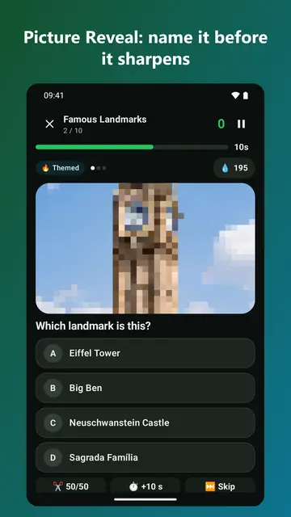

How the flags quiz works
Every Picture Reveal question starts with a pixelated picture. While a countdown runs, the picture gets sharper and you choose one of four answers. The sooner you answer correctly, the more points you score, so a fast guess from a few blurry colours beats a slow one from a sharp image.
That makes it a different kind of flags quiz from a plain list of questions. You are not only asked which country a flag belongs to. You are also racing the picture, and every answer shows how well you knew your flags under a little pressure.
Flags, landmarks, animals and cars
Picture Reveal is a flags quiz and a picture quiz in one. The pictures cover flags, landmarks, animals and cars, so there is more than one kind of picture to guess. If you fancy a break from flags, a famous landmark, an animal or a car is only a question away.
Play it alone or with friends
You can play Picture Reveal on your own whenever you like. It is part of the same app as the Daily Drop, so it works offline like the rest of the game: on a plane, on a train, anywhere without a signal.
It also works as a topic for a game with friends. When you host an online game, you choose the quiz topics yourself, from categories and themed packs to picture packs, and 5, 10, 15 or 20 questions. Friends join from their own phones with a room code, a QR code or a PIN. A crown goes to the fastest correct answer, and the final round pays double points.
More than a flags quiz
Knowdrop is first of all a trivia game. Every day at 00:00 UTC a new Daily Drop arrives with 10 questions, and the question bank holds more than 12,000 questions in 13 categories. After each answer you see a fun fact and a source link, and you can read how every question is written and fact-checked.
Knowdrop is free to play. There are no lives, no energy and no waiting timers, and free players see a small banner ad on menu and result screens, never during a question. It needs Android 8.0 or newer.


Questions and answers
Is there a flags quiz in Knowdrop?
Yes. Picture Reveal shows a pixelated picture that comes into focus: guess flags, landmarks, animals and cars. The sooner you answer, the more you score.
Does the flags quiz work offline?
Yes. The whole game works offline, so you can play on a plane or a train. Online features such as friends, leaderboards and live parties need a connection.
Can I play the flags quiz with friends?
Yes. When you host an online game you choose the topics, including picture packs, and friends join from their own phones with a room code, a QR code or a PIN.